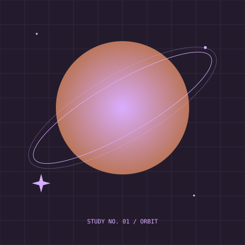
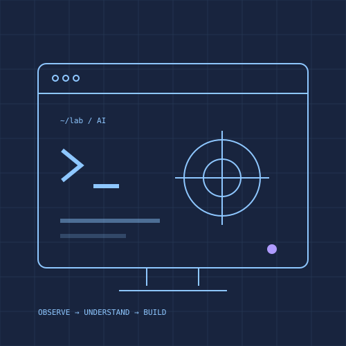

CREATIVE PROJECTS
Digital design
Landing pages, visual concepts, and digital assets. Scope, licensing, and price are agreed before work starts.
SPACE / ART / DIGITAL CRAFT
A creative studio concept at the intersection of space-inspired art, digital design, and photography. Starting small, with work that can speak for itself.
Concept studio · Print collection not yet released

THE IDEA / IN PRACTICE
This edition features original vector studies created for the site, not astrophotographs or products ready to ship. Commercial launch requires brand clearance and an approved catalog with production samples.
CREATIVE PROJECTS
Landing pages, visual concepts, and digital assets. Scope, licensing, and price are agreed before work starts.
ORIGINAL VECTOR ART
Explore three geometric studies below. These are concept artwork, not photos of named astronomical targets.
PRINTS & OBJECTS
A planned collection once artwork rights, fulfillment, print quality, and pricing are verified. No checkout is available yet.
ORIGINAL VECTOR STUDIES / CONCEPT WORK



A SIMPLE APPROACH
Define the subject, audience, format, and intended use.
Review a concept before building a full collection.
Confirm rights, deliverables, and quality before release.
A FEW GOOD QUESTIONS
Not yet. No print catalog or fulfillment provider has been approved.
No. The artwork in this edition consists of original vector design studies.
Trademark clearance has not been completed. This is a concept and design preview pending that review.
THE NEXT STEP
Share the intended project, format, audience, and timeline. A proposal comes before any paid work.
Design review only
Live inquiries, appointments, purchases, and subscriptions are not enabled in this preview.
Explore the concept ↗